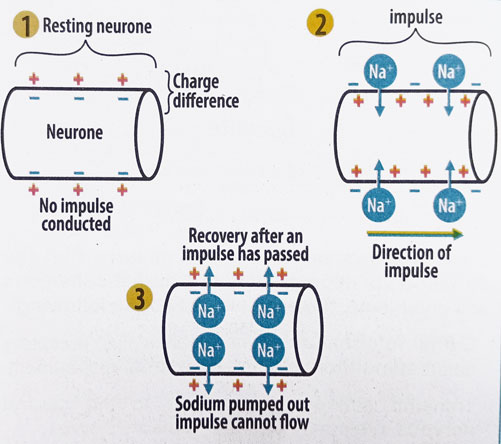

The resting potential is the electrical potential difference across the membrane of a neuron when it is not transmitting a signal. It is typically around -70 millivolts (mV).
During a resting potential, sodium-potassium pump, actively transports three (3) sodium ions (Na+) out of the cell and two (2) potassium ions (K+) into the cell, against their concentration gradients. This requires ATP.
A high concentration of Na+ build up outside the cell while a high concentration of K+ accumulate inside the cell, resulting in a negative charge inside the neuron relative to the outside (the inside of the cell becomes negatively charged while the outside is positively charged).
An action potential is a rapid and temporary change in the electrical potential across the membrane of a neuron when it is stimulated. It is the mechanism by which neurons transmit signals along their axons.
When a neuron is stimulated, voltage-gated sodium channels open, allowing Na+ ions to rush into the cell by diffustion. This causes the membrane potential to become more positive, leading to depolarization.
Depolarization causes even more sodium ions to enter the cell, leading to further depolarization until a certain threshold (usually around -55 mV) is reached, and an action potential is generated.
The generation of an action potential at a point on the axon stimulates the immediate adjacent resting region ahead to become depolarized, and subsequently generating an action potential. This process is repeated along the neuron, propagating the action potential or nerve impulse.
At the peak of an action potential (around +30 mV), sodium channels close and voltage-gated potassium channels open, allowing K+ ions to exit the cell by diffusion. The membrane is repolarized and returned to its resting membrane potential. Sodium/Potassium pump again ensures the correct distribution of sodium and potassium ions in preparation for another action potential.
After an action potential, there is a brief period called the refractory period during which the neuron cannot fire another action potential. This ensures that action potentials only travel in one direction along the axon. Refractory period also allows the neuron to reset before it can be stimulated again.

NB: In myelinated neurons, action potential jumps from one node of Ranvier to another. This is known as saltatory conduction and it results in faster transmission of nerve impulse than in non-myelinated neurons.
The speed of impulse transmission along a neuron depends on the following factors:
1. Diameter of the axon: Larger diameter axons have less resistance to the flow of ions, allowing for faster transmission of nerve impulses.
2. Myelination: Myelinated neurons conduct impulses faster than non-myelinated neurons. Myelin sheath acts as an insulator and allows for saltatory conduction.
3. Temperature: Higher temperatures can increase the speed of nerve impulse transmission, while lower temperatures can slow it down.
The resting potential is the electrical potential difference across the cell membrane when the neuron is not transmitting a signal. It is maintained by the sodium-potassium pump, which actively transports sodium and potassium ions against their concentration gradients.
An action potential is a rapid, temporary change in the membrane potential that occurs when a neuron is stimulated above its threshold. It involves depolarization caused by the influx of sodium ions, followed by repolarization caused by the efflux of potassium ions. Once an action potential is generated, it is propagated along the axon.
In myelinated neurons, the myelin sheath facilitates saltatory conduction (the jumping of the action potential from one node of Ranvier to another), resulting in faster transmission of nerve impulses.
A refractory period follows an action potential, during which the neuron is unable to generate another action potential. This ensures unidirectional propagation of the nerve impulse.
Factors such as axon diameter, myelination, and temperature can influence the speed of nerve impulse transmission along a neuron.
1. Define resting potential and action potential.
2. Describe the process of impulse transmission along a neuron.
3. What is the role of the sodium-potassium pump in maintaining resting potential?
4. What is the significance of the refractory period in nerve impulse transmission?
5. How does myelination affect the speed of nerve impulse transmission?
6. What factors influence the speed of nerve impulse transmission along a neuron?